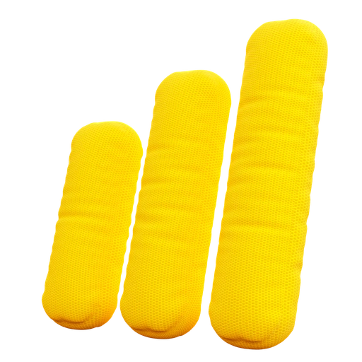
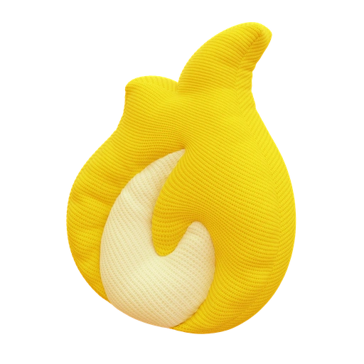

Данные по текущей локации
Подключение займёт 5–30 минут. После запуска отменить его нельзя.
Что такое мультисеть?
Ваша SIM работает с несколькими операторами и выбирает лучший сигнал. Если хотите — можете закрепить одного.

Переподключение
на сеть Т2
Сеть переключится в ближайшее время
Входящая
0,00Мбит/с
Нажимая кнопку, я соглашаюсь
с условиями конфиденциальности

Интернет — огонь!
Хватит для просмотра видео в 2K/4K
и быстрой загрузки больших файлов
Входящая22,53Мбит/с
Исходящая9,53Мбит/с
Задержка12мс